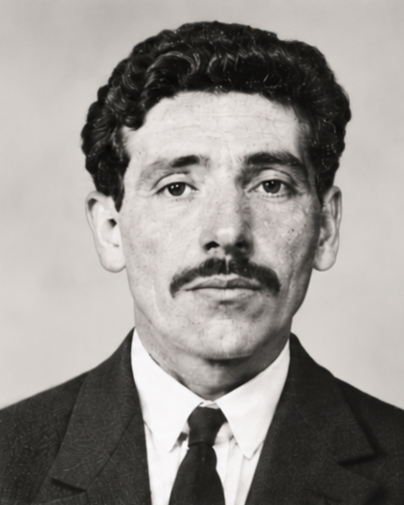
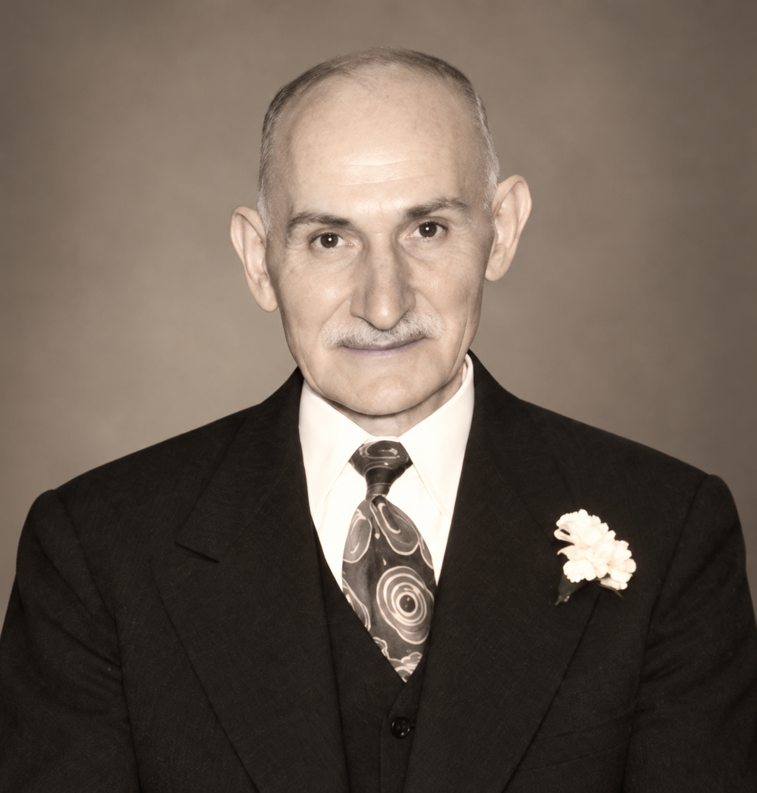
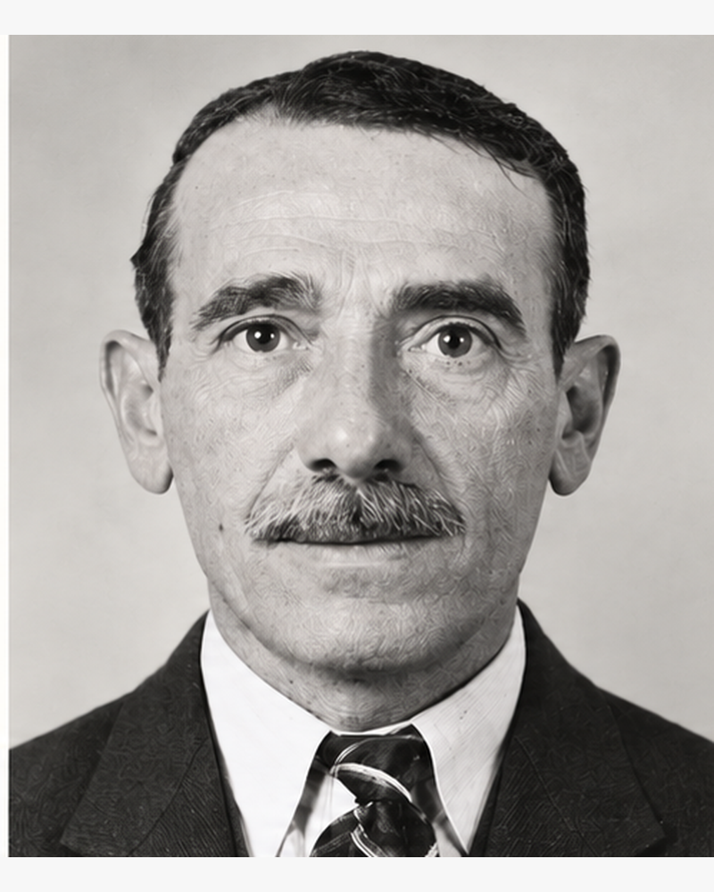
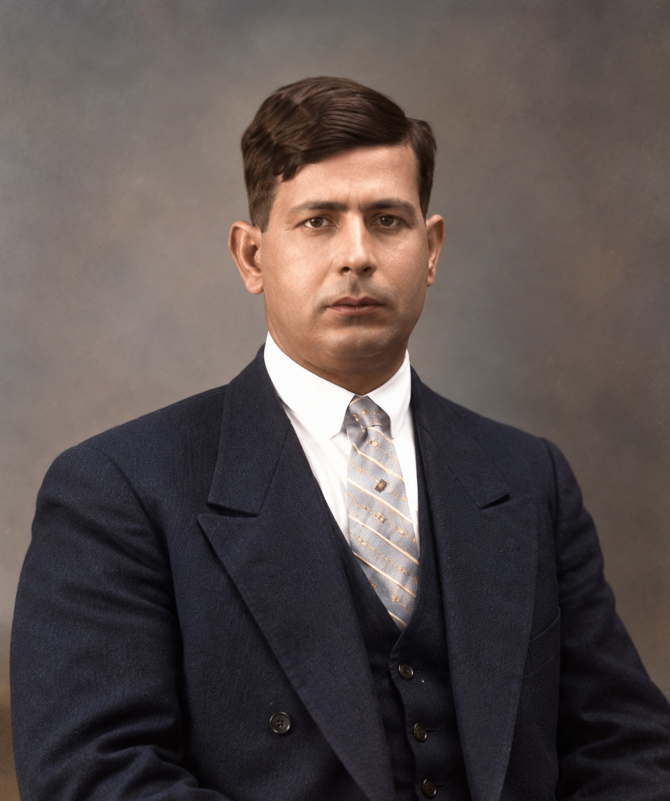
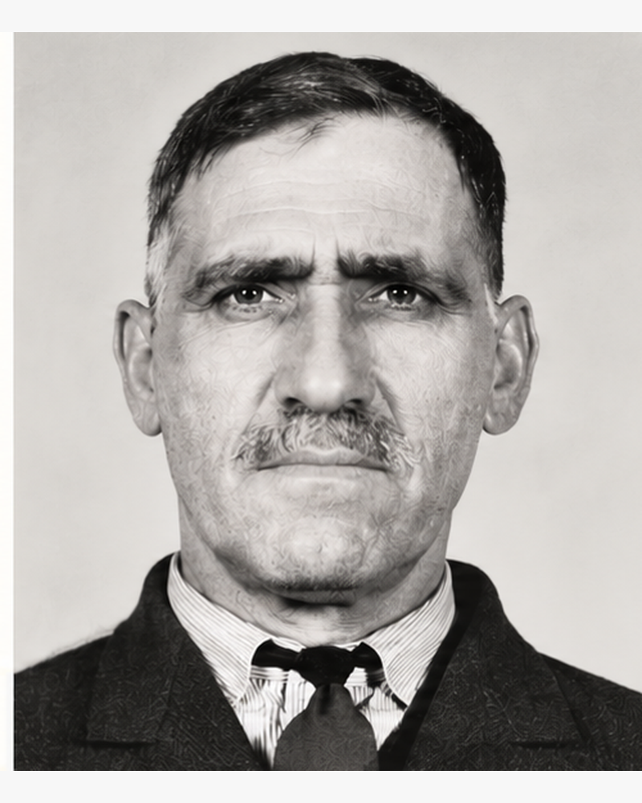

Founder 1
← Leadership Team
February 15, 1922
Founders & Charter Members
The seven charter members of Congregation Tifereth Israel, presented in the historical order preserved by CTI.
Founder 2
Nissim Eskenazi

Founder 3
Morris Gibely
Founder 4
Robert Hasday

Founder 5
Joseph Havian

Founder 6
David Leon

Founder 7
Joseph Pernitchi
Additional Historical Portraits
